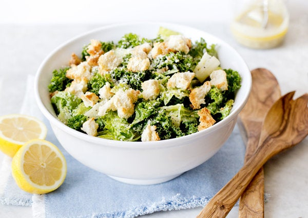

Kale Caesar

The OG sweetgreen dupe.
Ingredients
For the croutons (optional):
- 1 small day-old loaf of crusty bread
For the salad:
- 12 to 16 ounces green kale and romaine lettuce hearts, in
roughly equal amounts
- 1 large or 2 small garlic cloves
- 4 to 6 anchovies
- 1 teaspoon Dijon mustard, more to taste
- Salt and freshly ground black pepper
- ½ cup extra-virgin olive oil, more to taste
- 2 tablespoons freshly squeezed lemon juice, more to taste
- 1 egg
- 4 ounces freshly grated Parmesan, plus an extra chunk for
serving
Instructions
- Make the croutons: Heat oven to 400 degrees. Pull the soft
bread out of the center of the loaf, leaving the crust
behind, and tear the soft bread into bite-size pieces. You
should have about 3 cups. Spread pieces on a rimmed baking
sheet and bake for about 12 minutes, until golden and
crisp. Let cool.
- Prepare the kale: One large leaf at a time, use the tip of
a small, sharp knife to cut along the sides of the tough
center ribs. (Or, use your fingers to pull the leaves off
the rib.) Pull out the rib and discard. When all leaves are
trimmed, cut into bite-size pieces. (Do not shred.)
- Prepare the romaine: Cut large leaves crosswise into bite-
size pieces. Leave inner leaves whole.
- Fill a sink or salad spinner with very cold water and
submerge the leaves. Swish and let soak 5 to 10 minutes.
Working in batches, lift out and drain on a kitchen towel,
then dry in a salad spinner.
- Place a plastic bag filled with ice in the bottom of a
salad bowl. Pile the washed leaves on top, cover with
a damp kitchen towel and refrigerate until ready to
serve.
- In a blender (or using a hand blender), combine the garlic,
anchovies, mustard, a large pinch of salt, about a dozen
grinds of black pepper, olive oil and lemon juice. Blend
until smooth.
- Cook the egg: Poach in simmering water or in a microwave,
until yolk is thickened but still runny. (To poach in a
microwave, break egg into a glass bowl or measuring cup.
Gently pour in warm water to cover the egg by about ½ inch.
In bursts of 30 seconds or less, depending on microwave
power, cook egg until white is just firm and yolk is
thickened. Hold a slotted spoon over the sink and pour the
egg and water into it, so the cooked egg is held in the
spoon while the cooking water and any uncooked whites drain
off.) Put the egg in the dressing and blend.
- Taste and adjust the seasonings with mustard, oil, lemon,
salt and pepper. It should be pungent and sharp but not
acidic. Blend again, transfer to a container with a
tightfitting lid, and chill until ready to use.
- When ready to serve (or up to 2 hours beforehand), remove
towel and ice from the bowl and fluff the greens. (If
necessary, transfer to a larger bowl; you will need plenty
of room for tossing.) Shake the dressing. To the greens,
add half the croutons, half the dressing and half the
cheese and toss well. Taste and toss with remaining
dressing as needed. (If necessary, transfer the tossed
salad back to the salad bowl.) Add remaining croutons.
Sprinkle remaining grated cheese over the top and grind
coarse pepper over that. Serve immediately (or refrigerate
for up to 2 hours). Toss once more at the table.